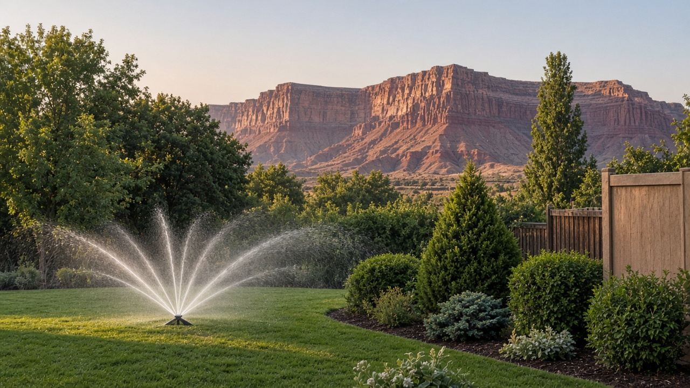

Lawns, trees, bushes, sprinklers, fences and swamp coolers, looked after since 2005.
Call Scott
Scott starts the business doing lawn care.
“Over the years I have done well.”
20+ years in, still a groundskeeper.
“I first started my business in 2005 doing lawn care, and over the years I have done well... I consider myself being a grounds keeper. Outdoor maintenance.”
— Scott